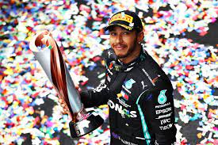
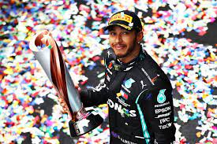
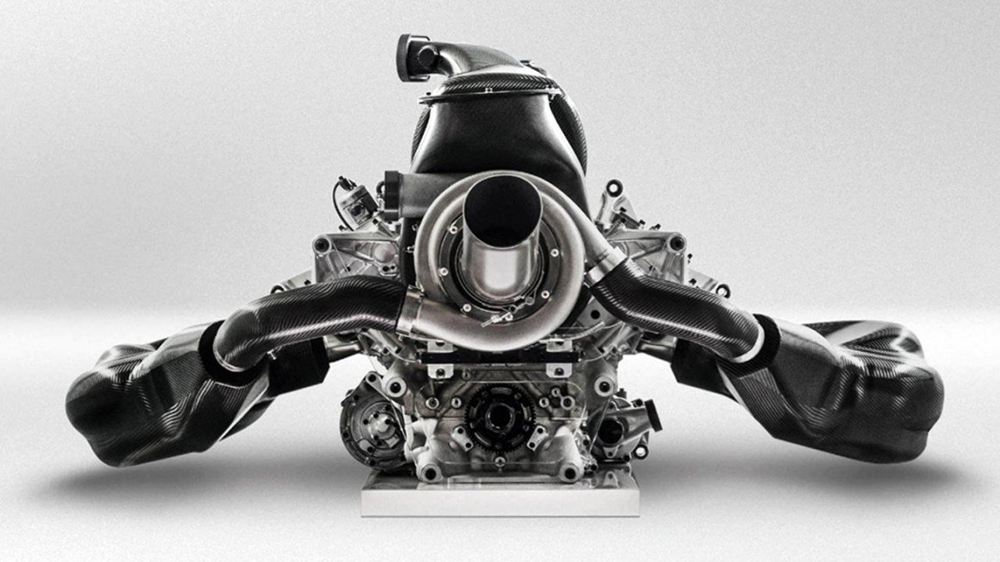
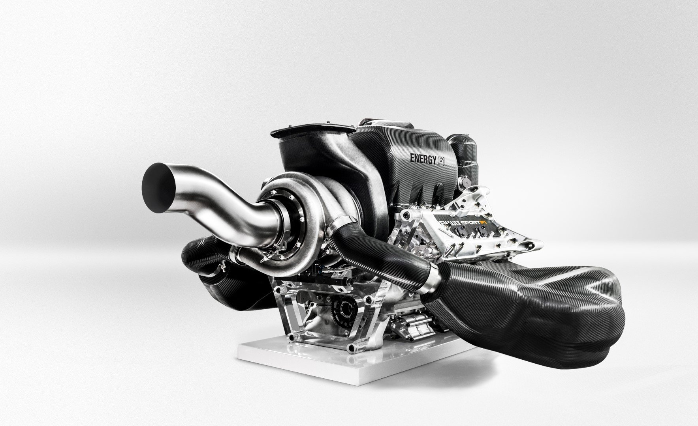

La categoría reina del automovilismo, una de las más prestigiosas, populares y longeva del mundo que involucra desde la composición de los átomos hasta la fusión de el hombre y la máquina en busca de la perfección. Todo esto dentro de un monoplaza, sus pilotos, diversos equipos y múltiples circuitos de diversas partes del mundo denominados Grandes Premios (GP) y el torneo que las agrupa Campeonato Mundial de Fórmula 1. Esta categoría exige y dispone de las mejores tecnologías e ingenierías mundiales a lo largo de la historia, obligándose a la innovación continua. Así mismo con la preparación física y psíquica de sus pilotos, preparadores, mecánicos, ingenieros y demás personal del equipo. Dentro del podio histórico, lugar en el que pocos países se encuentran, nosotros los argentinos y nuestros hermanos brasileños tenemos el privilegio de ser reconocidos mundialmente gracias a pilotos como Juan Manuel Fangio, Ayrton Senna, Nelson Piquet, Carlos Reutemann, Emerson Fittipaldi, José Froilán González y Oscar Alfredo Gálvez, entre otros. La intención es brindarles e informarles a ustedes, parte de la historia, ciencia y tecnología que nos brinda esta rama del deporte motor. ASGHE

Para hablar de la F1 debemos remontarnos a la época del 1950, a sus inicios, en los cuales
participaron escuderías como Ferrari, Alfa Romeo y Maserati. Con el paso del tiempo
algunas fueron reemplazadas por otras nuevas como McLaren, Williams, Red Bull y
Mercedes quien volvió luego de varias décadas, estas al día de la fecha siguen vigentes y
son de las más imponentes e importantes. Diferentes fueron las escuadras y pilotos que
participaron en ella, y tuvieron el honor de llegar a lo más alto de la competición a nivel
automovilístico.
A continuación, algunos de los grandes pilotos que tuvo y tiene la categoría.
Son treinta y tres los pilotos que han obtenido el Mundial de Pilotos; Michael Schumacher y Lewis
Hamilton
ostenta los récords de títulos con siete, Juan Manuel Fangio cinco, Alain
Prost y Sebastian Vettel lograron cuatro, y con tres se encuentran Jack Brabham, Jackie
Stewart, Niki Lauda, Nelson Piquet y Ayrton Senna.
Por otra parte, el piloto con mayor
cantidad
de victorias sin haber logrado ningún título
es Stirling Moss, quien ganó dieciséis carreras y resultó subcampeón cuatro veces y
tercero en tres. Otros pilotos con gran cantidad de victorias en Grandes Premios, sin haber
obtenido títulos, son: David Coulthard (13), Carlos Reutemann (12), Rubens Barrichello,
Felipe Massa (11), Gerhard Berger y Ronnie Peterson (10).

 

La organización de la misma, se rige bajo la reglamentación y normativas de la Federación Internacional del Automóvil (FIA) la cual divide el reglamento en dos partes. Las regulaciones técnicas, que recaen sobre el vehículo (monoplaza) y las regulaciones deportivas que deben desarrollarse y respetarse en los eventos, como así también las reglas de puntuación y penalización. A partir de los reglamentos se da la puntuación y orden del campeonato, que se distribuye de la siguiente manera, el ganador conseguirá 25 puntos; el segundo clasificado, 18; el tercero, 15; el cuarto, 12; el quinto, 10; el sexto, 8; el séptimo, 6; el octavo, 4; el noveno, 2; y el décimo, 1 punto. En el caso de los constructores la suma de los puntos de sus pilotos determina los puntos totales del equipo y la posición del mismo en el campeonato. Este tipo de calificación se rige en la actualidad, que con el correr de los años tuvo sus respectivas modificaciones.


Excepto para la organización y escuderías las cuales comienzan con su cronograma el día lunes, la competición se celebra al final de semana. El fin de semana de carrera comienza el día viernes, con dos sesiones de entrenamientos libres, el sábado se realiza otra sesión de entrenamientos, de una hora y a continuación la clasificación para el domingo. Esta se realiza de manera eliminatoria, la Q1 dura 18 minutos, y en ella a partir de los 7 minutos (por cada minuto y medio) se eliminan los tiempos más lentos. De los 20 pilotos solo pasan 15 a la Q2. La Q2 dura 15 minutos, a partir de los 6 minutos se eliminan los tiempos más lentos. De los 15 pilotos pasan solo 10. La Q3 dura 12 minutos a partir de los 5 minutos, se eliminan los tiempos más lentos y así hasta terminar el tiempo. Se completa la grilla de partida, se determina las posiciones de la clasificación y la pole position. El domingo antes de comenzar la carrera se da la denominada vuelta de formación donde se aprovecha para calentar motores, frenos y neumáticos.

Los fórmula 1 actualmente usan motores híbridos de combustión interna de 1.6 Litros V6 a 90° de cuatro tiempos turboalimentado.Esto generan una potencia de casi 950 CV o 1000 CV que se producen gracias a la alta velocidad de rotación de 15000 RPM (revoluciones por minuto).La carrera de la biela es de 39.7 mm y el diámetro del cilindro es de 98.0 mm.El consumo es de 34L cada 100 km y su peso es de 145 KG.Todo esto permite al monoplaza alcanzar una velocidad máxima promedio de 350 km/h, llegando a 370 km/h.
 En cuanto a circuitos, muchos países fueron anfitriones de los grandes premios y la mayoría de los circuitos de carreras donde se celebran los Grandes Premios son autódromos, aunque también se utilizan circuitos callejeros como Mónaco, Melbourne, Singapur y Bakú. Se les exige que las instalaciones cumplan requisitos de seguridad y comodidad, como salidas de escape amplias, superficie de pista lisa y ancha, y espacio para más de 50.000 personas. La longitud del trazado está limitada a entre 3 y 7 kilómetros. Los circuitos más conocidos de la F1 son los siguientes:


La Fórmula 1 no es solo un deporte en el que se mida la habilidad personal de los pilotos o el
rendimiento de
los monoplazas. También es un deporte de estrategias. Una estrategia acertada puede dar la victoria a un
piloto que a priori no sea favorito o que no haya sido el más rápido durante la
carrera.
Básicamente las estrategias tienen que ver con las entradas en boxes. Por ejemplo,
el
hecho de entrar antes
o después que un rival, o utilizar una dureza diferente en los neumáticos, puede variar las posiciones
de
una carrera. Aunque las paradas en boxes suponen una pérdida importante de tiempo, no siempre el que
hace
menos paradas es el que gana. A veces hacer más paradas es beneficioso, ya que permite ir más rápido en
la
pista y se puede compensar el tiempo que se pierde durante la parada.
Es primordial también
tomar
en cuenta los tiempos de trabajo de los equipos en los boxes durante la carrera,
ya que no todos los equipos trabajan a la misma velocidad. En varias ocasiones se ha dado la
circunstancia
de que un piloto puede perder una carrera o una posición importante en los boxes, por algún error del
equipo
que le asiste. Por ello, es vital que los mecánicos de estos equipos practiquen frecuentemente para
minimizar errores y tiempo en las paradas de los vehículos.
A partir del 2009 se prohibió la
recarga de combustible durante la carrera, lo que modificó
significativamente las estrategias, eliminando esta variable. Con la reglamentación actual, las
estrategias
toman menos importancia debido a las paradas, y se reducen básicamente a las posibilidades que ofrecen
los
neumáticos. Se puede parar menos veces utilizando neumáticos más duros, que aguantan más, pero también
ofrecen menos agarre y por lo tanto, hacen que los coches sean más lentos, o se pueden utilizar
neumáticos
blandos que tiene más agarre pero su desgaste es en menor tiempo y por lo tanto hacen a los coches más
rapidos. La clave está en saber encontrar
el equilibrio y las paradas justas para que el proceso esté optimizado y en conjunto se sea lo más
rápido
posible.
En las carreras con lluvia, la estrategia toma más importancia, ya que es de vital
importancia saber cuando
hay que entrar a cambiar los neumáticos de seco a lluvia o viceversa. Poner unos neumáticos de lluvia
sobre
una superficie demasiado seca, o unos neumáticos de seco sobre una superficie demasiado húmeda supone
una
pérdida enorme de tiempo en la pista, ya que los coches no rinden al máximo de sus prestaciones.